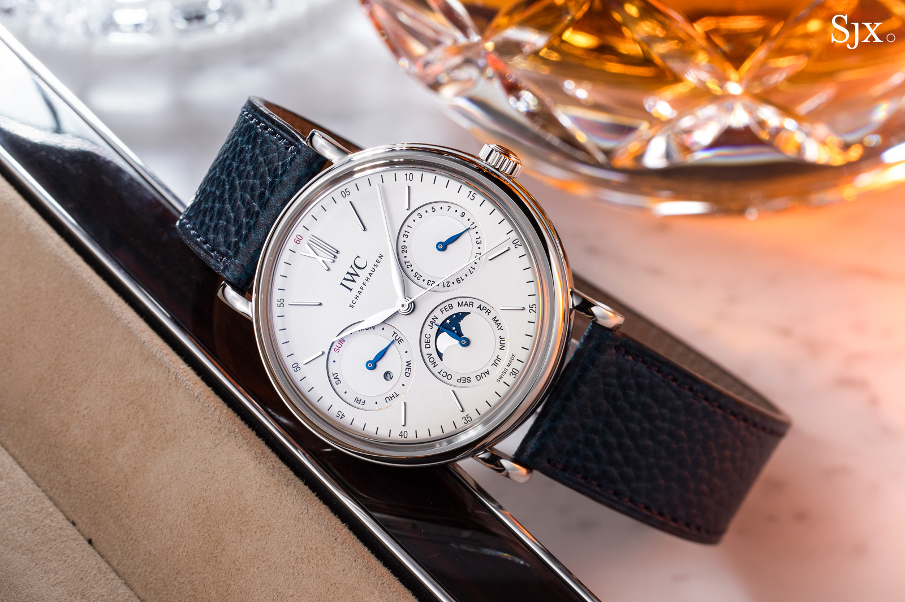

Portofino
Met het assortiment Portofino-horloges hervatte IWC de traditie van de klassiekers, functionele ronde gouden kasten. Referentie 5251, met zijn opmerkelijke uurwerken, markeerde dit begin. In 1984 werd het het leidende model van de Portofino-familie.

Specificaties
Prijs: $3.917
Opwinden: Handopwind
Bouwjaar: 1997
Referentienummer: 3570.50.00
Hoogte: 13.8mm
Waterdicht: 5 ATM
Glas: Kuntstof
Diameter: 42mm